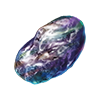
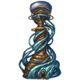
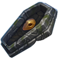
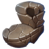
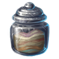

Minor artifacts
Version
This article is for the PC version of Stellaris only.
| |
Available only with the Ancient Relics DLC enabled. |
 Minor artifacts represent obscure technology and half-forgotten lore left behind by ancient civilizations. Unlike other resources, they are mostly gained in batches from events, special projects, or mainly, archaeological sites. They can also be gained monthly in small quantities from deposits in space, and from various planetary features. Empires can store up to 2000 minor artifacts at game start.
Minor artifacts represent obscure technology and half-forgotten lore left behind by ancient civilizations. Unlike other resources, they are mostly gained in batches from events, special projects, or mainly, archaeological sites. They can also be gained monthly in small quantities from deposits in space, and from various planetary features. Empires can store up to 2000 minor artifacts at game start.
Minor Artifacts are used in artifact actions and decisions. If the  MegaCorp DLC is enabled, they can also be used to upgrade a Mega Art Installation past its final stage.
MegaCorp DLC is enabled, they can also be used to upgrade a Mega Art Installation past its final stage.
Artifact actions
Minor Artifacts are mainly used in artifact actions, which give the empire an instant benefit.
| Action | Effect | Requirements | Description | ||
|---|---|---|---|---|---|
| Sell to Private Collectors | 50 |
|
6 months | Put some of our minor artifacts up for auction to private collectors.
| |
| Celebrate Diversity |
|
100 |
|
10 years | Display some of our minor artifacts to show the diversity of life in the galaxy.
|
| Proclaim Religious Revelation |
|
100 | Spiritualist | 10 years | The discovery of artifacts far predating our own civilization has given indisputable proof of our beliefs.
|
| Proclaim Superiority |
|
100 | Xenophobe | 10 years | Destroy minor artifacts to show disdain for civilizations better off dead.
|
| Discover Precursor Insight | 500 | 10 years | We should be able to track down the location of a precursor site using these artifacts.
| ||
| Discover L-Gate Insight | 1000 |
|
10 years | We should be able to piece together more of the mysteries surrounding the L-Gates using these artifacts.
|
Applications
Empires that research the  Arcane Deciphering technology have access to the Find Military Applications and Find Peaceful Applications artifact actions. Each use costs
Arcane Deciphering technology have access to the Find Military Applications and Find Peaceful Applications artifact actions. Each use costs  150 minor artifacts, has a mutual cooldown of 900 days, and allows choosing an empire modifier that lasts for 5 years, with available choices depending on the empire's authority type.
150 minor artifacts, has a mutual cooldown of 900 days, and allows choosing an empire modifier that lasts for 5 years, with available choices depending on the empire's authority type.
| Modifier | Effects | |||
|---|---|---|---|---|
| Harmonic Isolation | ||||
| Weak Point Analysis | ||||
Combat Drugs
|
|
| Modifier | Effects | |||
|---|---|---|---|---|
| Ancient Fad | ||||
| Efficient Manufacturing | ||||
Battery Miniaturization
|
||||
Management Insights
|
|
Reverse-Engineer Arcane Technology
Empires that research the  Arcane Deciphering technology have access to the Reverse-Engineer Arcane Technology artifact action. Each use costs
Arcane Deciphering technology have access to the Reverse-Engineer Arcane Technology artifact action. Each use costs  500 minor artifacts and has a cooldown of 2 years. The artifact action will give one of the following:
500 minor artifacts and has a cooldown of 2 years. The artifact action will give one of the following:
 24x Engineering output (500~1000000) (10%)
24x Engineering output (500~1000000) (10%) 24x Physics output (500~1000000) (10%)
24x Physics output (500~1000000) (10%) 24x Society output (500~1000000) (10%)
24x Society output (500~1000000) (10%) +10% Research speed for 5 years (25%)
+10% Research speed for 5 years (25%) Random technology research option at 20% progress (25%)
Random technology research option at 20% progress (25%)- Fallen empire building (20%)
- Chance is doubled if the empire has the
 Archaeo-Engineers ascension perk
Archaeo-Engineers ascension perk - Obtained building can only be used once and cannot be demolished and then moved
- Chance is doubled if the empire has the
Secrets of the Precursors
Completing a precursor chain will unlock an artifact action that can only be used once and costs  750 minor artifacts. Once used it will issue a special project to delve into the secrets of the precursor. Completing the special project grants various rewards depending on the precursor empire.
750 minor artifacts. Once used it will issue a special project to delve into the secrets of the precursor. Completing the special project grants various rewards depending on the precursor empire.
| Action | Special project | Requirements |
|---|---|---|
| Secrets of the Baol | Delve into the Secrets of the Baol | Surveyed Grunur |
| Secrets of the Cybrex | Delve into the Secrets of the Cybrex | Surveyed the Cybrex Ring World |
| Secrets of the First League | Delve into the Secrets of the First League | Surveyed Fen Habbanis III |
| Secrets of the Irassians | Delve into the Secrets of the Irassians | Surveyed Irassia |
| Secrets of the Vultaum | Delve into the Secrets of the Vultaum | Surveyed Vultaumar Prime |
| Secrets of the Yuht | Delve into theSecrets of the Yuht | Surveyed Yuthaan Majoris |
| Secrets of the Zroni | Delve into the Secrets of the Zroni | Surveyed Zron Prime |
| Delve into the Secrets of the Inetian Traders | Completed | |
| Delve into the Secrets of the adAkkaria Convention | Chose to end the storm in adSul |
Artifact Analysis
|
|
Available only with the Grand Archive DLC enabled. |
The Artifact Analysis action can be used up to 5 times and will grant a random specimen. It costs  300 minor artifacts and each use increases the cost by an additional
300 minor artifacts and each use increases the cost by an additional  50 minor artifacts. Each specimen can only be obtained once per empire. The artifact action will give one of the following specimens:
50 minor artifacts. Each specimen can only be obtained once per empire. The artifact action will give one of the following specimens:

Starmetal (3.3% chance)
Sullebaster Control Column (3.3% chance)- Veil of Selene (3.3% chance)
- Crystallized Cutholoid Eye (6.6% chance)
- Memorial Stone (6.6% chance)

Tiny Ancient Sarcophagus (6.6% chance)- Ancient Bust (7.7% chance)
- Ancient Kinetic Launcher (7.7% chance)
- Ancient Political Memoir (7.7% chance)

Chambered Clay Pot (7.7% chance)- Fossilized Voidworm Tooth (7.7% chance)
- Oiled Fabric (7.7% chance)
- Perfectly Faceted Carbon (7.7% chance)

Striated Sand (7.7% chance)- Uranium Glassware (7.7% chance)
{kind=link}
{kind=link}
{kind=link}
{kind=link}
{kind=link}
{kind=link}
{kind=link}
{kind=link}
{kind=link}
{kind=link}
{kind=link}
{kind=link}
{kind=link}
{kind=link}
{kind=link}
References
| Exploration | Exploration • FTL • Unique systems • L-Cluster • Pre-FTL species • Fallen empire • Spaceborne aliens • Enclaves • Guardians • Marauders • Caravaneers |
| Celestial bodies | Celestial body • Colonization • Planetary features • Planet modifiers |
| Discovery | Discovery • Anomaly • Archaeological site • Astral rift • Relics • Collection |
| Species | Species • Pop modification • Biological traits • Machine traits • Population • Species rights • Ethics |
| Leaders | Leader • Common leader traits • Commander traits • Official traits • Scientist traits • Paragons |
| Governance | Empire • Origin • Government • Civics • Council • Policies • Edicts • Factions • Traditions • Ascension perks • Ambition • Situations |
| Economy | Resources • Planetary management • Districts • Jobs • Designation • Trade • Megastructures • Waystation |
| Buildings | Planet capital • Common buildings • Planet unique • Empire unique • Holdings |
| Ships | Ship • Arkship • Ship designer • Core components • Weapon components • Utility components • Mutations • Offensive mutations |
| Technology | Technology • Physics research • Society research • Engineering research |
| Diplomacy | Diplomacy • Relations • Galactic community • Federations • Subject empires • Intelligence • Contracts • AI personalities |
| Warfare | Warfare • Space warfare • Land warfare • Starbase • Crisis |
| Others | Events • The Shroud • Preset empires • AI players • Stat modifiers • Console commands • Easter eggs |